Single Sideband Modulation via the Hilbert Transform
This demo shows the use of the discrete Hilbert Transform in Single Sideband Modulation.
The Hilbert Transform finds applications in modulators and demodulators, speech processing, medical imaging, direction of arrival (DOA) measurements, essentially anywhere complex-signal (quadrature) processing simplifies the design.
Contents
Introduction
Single Sideband (SSB) Modulation is an efficient form of Amplitude Modulation (AM) that uses half the bandwidth used by AM. This technique is most popular in applications such as telephony, HAM radio, and HF communications, i.e., voice-based communications. This demo shows how to implement SSB Modulation using a Hilbert Transformer.
To motivate the need to use a Hilbert Transformer in SSB modulation, it's helpful to first quickly review double sideband modulation.
Double Sideband Modulation
A simple form of AM is the Double Sideband (DSB) Modulation, which typically consists of two frequency-shifted copies of a modulated signal on either side of a carrier frequency. More precisely this is referred to as a DSB Suppressed Carrier, and is defined as
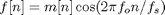
where m[n] is usually referred to as the message signal and fo is the carrier frequency. As shown in the equation above, DSB modulation consists of multiplying the message signal m[n] by the carrier cos(2*pi*fo*n/fs), therefore, we can use the modulation theorem of Fourier transforms to calculate the transform of f[n]
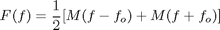
where M(f) is the Discrete-time Fourier Transform (DTFT) of m[n]. If the message signal is lowpass with bandwidth W, then F(f) is a bandpass signal with twice the bandwidth. Let's look at an example DSB signal and its spectrum.
% Define and plot a message signal which contains three tones at 500, 600, % and 700 Hz with varying amplitudes. Fs = 10e3; t = 0:1/Fs:.1-1/Fs; m = sin(2*pi*500*t) + .5*sin(2*pi*600*t) + 2*sin(2*pi*700*t);; plot(t,m); % Plot annotations. grid xlabel('Time') ylabel('Amplitude') title('Message Signal m[n]')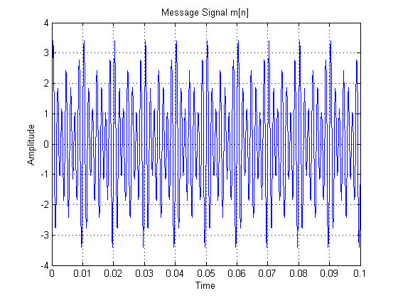
Below we calculate and plot the mean-square (power) spectrum of the message signal.
h = spectrum.periodogram; opts = msspectrumopts(h,m); opts.NFFT = 4096; opts.Fs = Fs; opts.CenterDC = true; msspectrum(h,m,opts) % Let's zoom into the area of interest. Xlims = get(gca,'xlim'); set(gca,'xlim',Xlims,'ylim',[-75 12])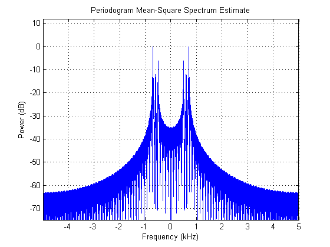
The double-sided power spectrum clearly shows the three tones near DC. If we zoom in further we'll be able to read the power of each component.
set(gca,'xlim',[0.1 1],'ylim',[-18 2])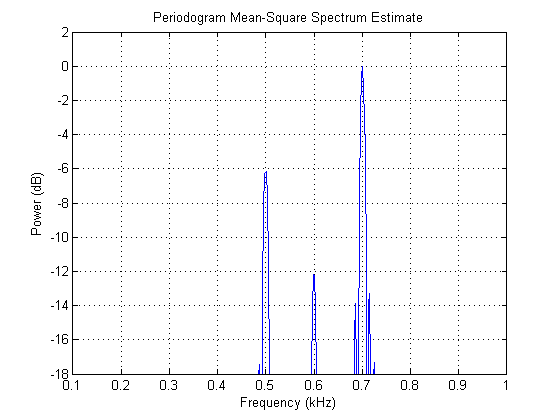
The power for the 500 Hz tone is roughly -6 dB, for the 600 Hz tone is -12 dB, and for the 700 Hz tone is 0 dB, which corresponds to the message signal's tone amplitudes of 1, 0.5, and 2, respectively.
Using this message signal m[n], let's multiply it by a carrier to create a DSB signal, and look at its spectrum.
fo = 3.5e3; % Carrier frequency in Hz f = m.*cos(2*pi*fo*t); idx = 100; plot(t(1:idx),f(1:idx),t(1:idx),m(1:idx),'r:'); % View a portion. grid % Plot annotations. xlabel('Time') ylabel('Amplitude') title('Message Signal and Message Signal Modulated') legend('Modulated Message Signal','Message Signal m[n]') set(gcf,'color','white');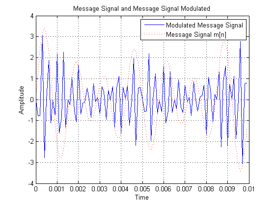
The blue solid line is the modulated message signal, and the red dotted line is the slow varying message signal. The power spectrum of our modulated signal is then
msspectrum(h,f,opts) % Let's zoom into the area of interest. Xlims = get(gca,'xlim'); set(gca,'xlim',Xlims,'ylim',[-75 0]) set(gcf,'color','white');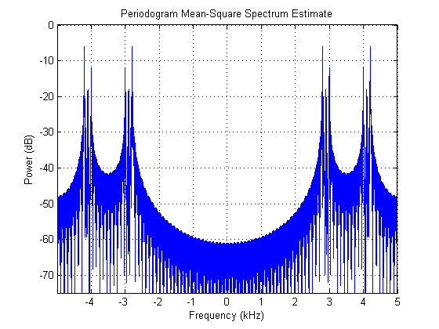
We can see that the message signal (three tones), has been shifted to the center frequency fo. Moreover, each component's power has been reduced to one quarter, due to the amplitudes being halved, as indicated by the DTFT of the modulated m[n]. Let's zoom to read the new power values
set(gca,'xlim',Xlims,'ylim',[-20 0])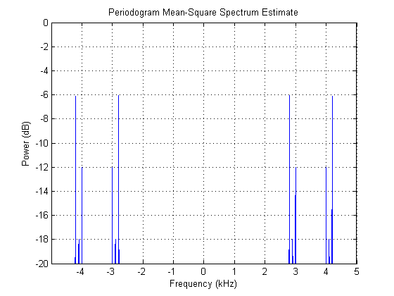
Our positive frequency components are now at -6, -18, and -12 dB.
Now that we've defined DSB modulation, let's take a look at single sideband modulation.
Single Sideband Modulation
Single Sideband (SSB) Modulation is similar to DSB modulation, but instead of using the whole spectrum it uses a filter to select either the lower or upper sideband. The selection of the lower or upper sideband results in the lower sideband (LSB) or upper sideband (USB) modulation, respectively. There are two approaches to eliminating one of the sidebands, one is the filter method and the other is the phasing method. The process of selective filtering of the upper or lower sideband is difficult due to the stringent filters required, especially if there's signal content close to DC. This demo will discuss the alternative, the phasing method, which uses a Hilbert Transformer to implement SSB Modulation.
SSB modulation requires the shifting of the message signal to another center frequency without creating pairs of frequency components X(f-fo) and X(f+fo) as in the case of the DSB modulation, i.e., avoiding the need to filter either the upper or lower sideband. This can be done by using a Hilbert Transformer.
Let's first review the definition and properties of the ideal Hilbert Transform before we discuss its use in SSB modulation. This will help motivate its use in SSB modulation.
Ideal Hilbert Transform
The discrete Hilbert Transform is a process by which a signal's negative frequencies are phase-advanced by 90 degrees and the positive frequencies are phase-delayed by 90 degrees. Shifting the results of the Hilbert Transform (+j) and adding it to the original signal creates a complex signal as we'll see below.
If mi[n] is the Hilbert Transform of mr[n], then:
![$$m_c[n] = m_r[n] + jm_i[n]$$](hilberttransformdemo_eq23751.png)
is a complex signal known as the Analytic Signal. The diagram below shows the generation of an analytic signal by means of the ideal Hilbert Transform.
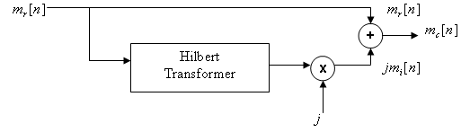
One important characteristic of the analytic signal is that its spectral content lies in the positive Nyquist interval. This is because if we shift the imaginary part of our analytic (complex) signal by 90 degrees (+j) and add it to the real part, the negative frequencies will cancel while the positive frequencies will add. This results in a signal with no negative frequencies. Also, the magnitude of the frequency component in the complex signal is twice the magnitude of the frequency component in the real signal. This is similar to a one-sided spectrum, which contains the total signal power in the positive frequencies.
Next we introduce a Spectral Shifter. The Spectral Shifter shifts (translates) the spectral content of a signal by modulating the analytic signal formed from the signal whose spectrum we want to shift. This concept can be used for SSB modulation as shown later.
Spectral Shifter
Using the message signal m[n] defined above we'll create an analytic signal by employing the Hilbert Transform, which will then be modulated to the desired center frequency. The scheme is shown in the diagram below.
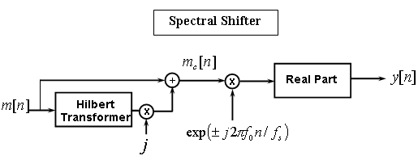
Using this method of spectral shifting will ensure that the power of our signal is shifted to the frequency of interest while maintaining a real-valued signal in the end.
As we indicated earlier the analytic signal is made up of the original real-valued signal plus the Hilbert Transform of that real signal. Running the real signal by the hilbert function in the Signal Processing Toolbox™ will produce an analytic signal.
Note: The hilbert function produces the complete analytic (complex) signal, not just the imaginary part.
mc = hilbert(m);
Using the same spectrum object h defined above, we can calculate and plot the spectral content of the analytic signal constructed from our message signal m[n].
msspectrum(h,mc,opts) Xlims = get(gca,'xlim'); set(gcf,'color','white'); % Let's zoom in. Xlims = get(gca,'xlim'); set(gca,'xlim',Xlims,'ylim',[-75 6])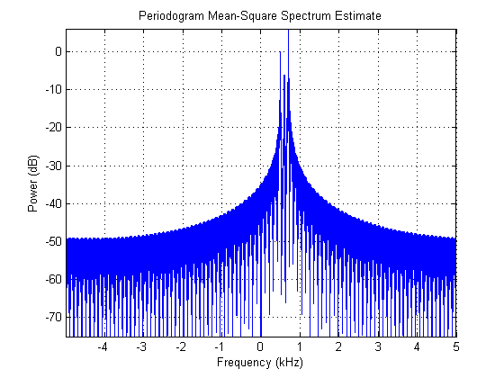
As shown in the spectrum plot, our analytic signal is complex and only contains positive frequency components. Moreover, if we measure the power, or zoom in our plot further at the positive frequency component we'll see that the power of the frequency components of the analytic signal is twice the total power of the positive (or negative) frequency component of the real signal, i.e., it's similar to a one-sided spectrum which contains the signal's total power. See zoomed-in plot below.
set(gca,'xlim',[0.1 1],'ylim',[-10 6])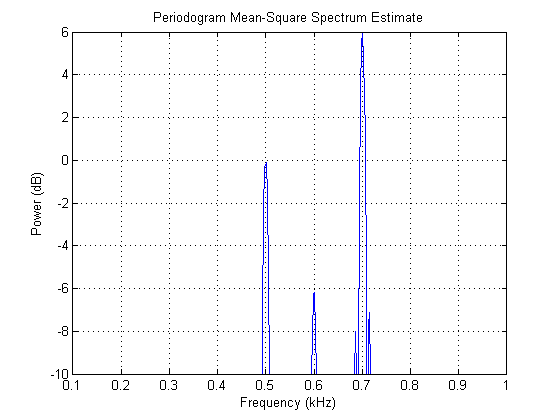
We see that the power of the analytic (complex) signal's frequency components 500, 600, and 700 Hz are roughly 0, -6, and 6 dB, respectively, which is the original signal's total power. These values correspond to our original real-valued signal which has three tones with amplitudes of 1, 0.5, and 2, respectively.
At this point we can modulate the analytic signal to shift the spectral content to another center frequency without producing frequency component pairs and maintain a real-valued signal.
To modulate the signal to the carrier frequency fo, we'll multiply the analytic signal by an exponential.
mcm = mc.*exp(j*2*pi*fo*t);
As shown in the Spectral Shifter diagram, after modulating our signal we'll compute the real part. The spectrum of which is
msspectrum(h,real(mcm),opts) % Zooming in we get Xlims = get(gca,'xlim'); set(gca,'xlim',Xlims,'ylim',[-75 0]) set(gcf,'color','white');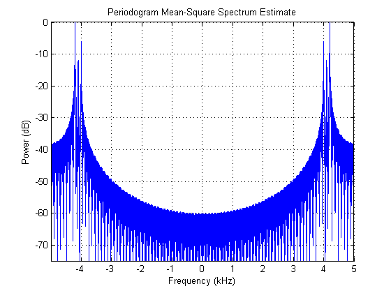
As shown in the plot above our signal has been modulated to a new center frequency of fo without creating the frequency pairs, i.e., it resulted in upper sideband.
If we compare the spectral plot above with that of the DSB modulation we can see that the Spectral Shifter accomplished the SSB modulation.
Efficient Implementation of SSB Modulation
From our previous derivation we can see that the SSB modulated signal, f[n] can be written as
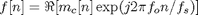
where mc[n] is the analytic signal defined as
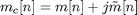
Expanding that equation and taking the real part we get
which results in a single sideband, upper sideband (SSBU). Similarly, we can define the SSB lower sideband (SSBL) by
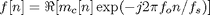
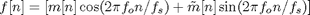
The SSBU equation above suggests a more efficient way of implementing SSB. Rather than performing the complex multiplication of mc[n] with exp(j*2*pi*fo*n/fs) and then throwing away the imaginary part, we can compute only the quantities we need by implementing SSBU as shown below.
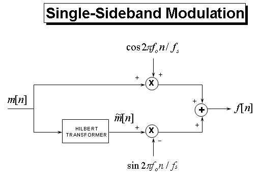
To implement the SSB modulation shown above we need to calculate the Hilbert Transform of our message signal m[n] and modulate both signals. But before we do that we need to point out the fact that ideal Hilbert transformers are not realizable. However, algorithms that approximate the Hilbert Transformer, such as the Parks-McClellan FIR filter design technique, have been developed which can be used. MATLAB® Signal Processing Toolbox™ provides the firpm function which designs such filters. Also, since the filter introduces a delay we need to compensate for that delay by adding delay (N/2, where N is the filter order) to the signal that is being multiplied by the cosine term as shown below.
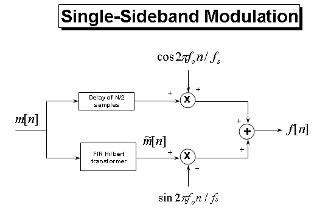
For the FIR Hilbert transformer we will use an odd length filter which is computationally more efficient than an even length filter. Albeit even length filters enjoy smaller passband errors. The savings in odd length filters is a result that these filters have several of the coefficients that are zero. Also, using an odd length filter will require a shift by an integer time delay, as opposed to a fractional time delay that is required by an even length filter. For an odd length filter, the magnitude response of a Hilbert Transformer is zero for w = 0 and w = pi. For even length filers the magnitude response doesn't have to be 0 at pi, therefore they have increased bandwidths. So for odd length filters the useful bandwidth is limited to

Let's design the filter and plot its zero-phase response.
d = fdesign.hilbert('N,TW',60,.1); Hd = design(d,'equiripple'); hfv = fvtool(Hd,'Analysis','Magnitude',... 'MagnitudeDisplay','Zero-phase',... 'FrequencyRange','[-pi, pi)'); set(hfv,'Color','white');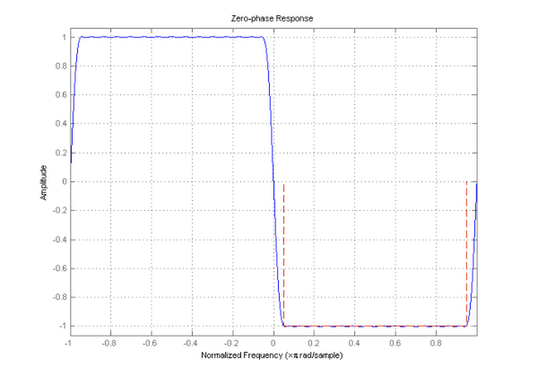
To approximate the Hilbert Transform we'll filter the message signal with the filter Hd.
m_tilde = filter(Hd,m);
The upper sideband signal is then
G = order(Hd)/2; % Filter delay
m_delayed = [zeros(1,G),m(1:end-G)];
f = m_delayed.*cos(2*pi*fo*t) - m_tilde.*sin(2*pi*fo*t);
and the spectrum is
msspectrum(h,f,opts) % Zooming in we get Xlims = get(gca,'xlim'); set(gca,'xlim',Xlims,'ylim',[-75 0]) set(gcf,'color','white');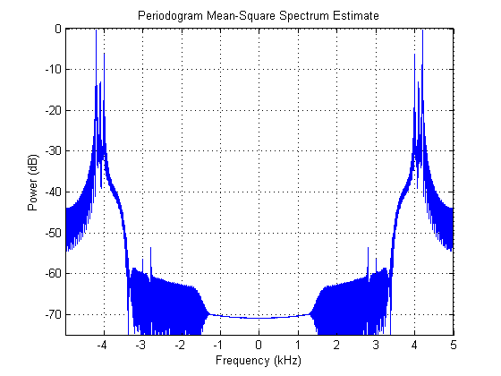
As seen in the plot above we successfully modulated the message signal (three tones) to the carrier frequency of 3.5k Hz and kept only the upper sideband.
Summary
As we have seen, by using an approximation to the Hilbert Transform we can produce analytic signals, which are useful in many signal applications that require spectral shifting. Specifically we have seen how an approximate Hilbert Transformer can be used to implement Single Sideband Modulation.